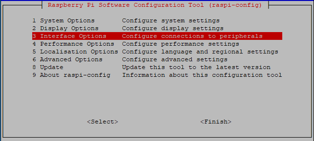

Bemerkung
Hallo und willkommen in der SunFounder Raspberry Pi & Arduino & ESP32 Enthusiasten-Gemeinschaft auf Facebook! Tauchen Sie tiefer ein in die Welt von Raspberry Pi, Arduino und ESP32 mit anderen Enthusiasten.
Warum beitreten?
Expertenunterstützung: Lösen Sie Nachverkaufsprobleme und technische Herausforderungen mit Hilfe unserer Gemeinschaft und unseres Teams.
Lernen & Teilen: Tauschen Sie Tipps und Anleitungen aus, um Ihre Fähigkeiten zu verbessern.
Exklusive Vorschauen: Erhalten Sie frühzeitigen Zugang zu neuen Produktankündigungen und exklusiven Einblicken.
Spezialrabatte: Genießen Sie exklusive Rabatte auf unsere neuesten Produkte.
Festliche Aktionen und Gewinnspiele: Nehmen Sie an Gewinnspielen und Feiertagsaktionen teil.
👉 Sind Sie bereit, mit uns zu erkunden und zu erschaffen? Klicken Sie auf [hier] und treten Sie heute bei!
Remotedesktop
Es gibt zwei Möglichkeiten, den Desktop des Raspberry Pi aus der Ferne zu steuern:
VNC und XRDP , Sie können jeden von ihnen verwenden.
VNC
Sie können die Funktion des Remote-Desktops über VNC verwenden.
VNC-Dienst aktivieren
Der VNC-Dienst wurde im System installiert. VNC ist standardmäßig deaktiviert. Sie müssen es in der Konfiguration aktivieren.
Schritt 1
Geben Sie den folgenden Befehl ein:
sudo raspi-config

Schritt 2
Wählen Sie 3 Interfacing Options , indem Sie die Abwärtspfeiltaste auf Ihrer Tastatur drücken und dann die Enter drücken.
Schritt 3
P3 VNC
Schritt 4
Wählen Sie Yes -> OK -> Finish , um die Konfiguration zu beenden.

Bei VNC anmelden
Schritt 1
Sie müssen den VNC Viewer herunterladen und auf Ihrem PC installieren. Nachdem die Installation abgeschlossen ist, öffnen Sie es.
Schritt 2
Wählen Sie dann "New connection".

Schritt 3
Geben Sie die IP-Adresse des Raspberry Pi und einen beliebigen Name ein.

Schritt 4
Doppelklicken Sie auf die soeben erstellte connection :
Schritt 5
Geben Sie den Benutzernamen ( pi ) und das Passwort (standardmäßig raspberry ) ein.
Schritt 6
Nun sehen Sie den Desktop des Raspberry Pi:

Das ist das Ende des VNC-Teils.
XRDP
Eine andere Methode des Remote-Desktops ist XRDP. Sie bietet eine grafische Anmeldung an Remote-Computern mithilfe von RDP (Microsoft Remote Desktop Protocol).
XRDP installieren
Schritt 1
Melden Sie sich mit SSH beim Raspberry Pi an.
Schritt 2
Geben Sie die folgenden Anweisungen ein, um XRDP zu installieren.
sudo apt-get update
sudo apt-get install xrdp
Schritt 3
Später startet die Installation.
Geben Sie „Y“ ein, drücken Sie zur Bestätigung die Taste „Enter“.

Schritt 4
Nachdem Sie die Installation abgeschlossen haben, sollten Sie sich mit Windows-Remote-Desktop-Anwendungen bei Ihrem Raspberry Pi anmelden.
Bei XRDP anmelden
Schritt 1
Wenn Sie ein Windows-Benutzer sind, können Sie die mit Windows gelieferte Remotedesktopfunktion verwenden. Wenn Sie ein Mac-Benutzer sind, können Sie Microsoft Remote Desktop aus dem APP Store herunterladen und verwenden, und es gibt keinen großen Unterschied zwischen den beiden. Das nächste Beispiel ist der Windows-Remotedesktop.
Schritt 2
Geben Sie „mstsc“ in Run (WIN+R) ein, um die Remotedesktopverbindung zu öffnen, geben Sie die IP-Adresse des Raspberry Pi ein und klicken Sie dann auf „Connect“.

Schritt 3
Dann erscheint die xrdp-Anmeldeseite. Bitte geben Sie Ihren Benutzernamen und Ihr Passwort ein. Danach klicken Sie bitte auf „OK“. Bei der ersten Anmeldung lautet Ihr Benutzername „pi“ und das Passwort „raspberry“.
Schritt 4
Hier melden Sie sich erfolgreich über den Remote-Desktop bei RPi an.